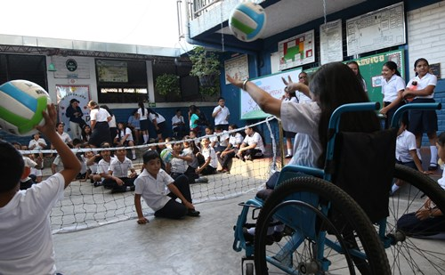

CONCLUSION
Después de realizar un proceso de investigación y análisis, se puede llegar a la conclusión que a pesar de los esfuerzos de las entidades gubernamentales, los mecanismos internacionales, los diferentes actores de proceso educativo y la sociedad en general, aun podemos observar grandes barreras tanto estructurales como normativas y didácticas en materia de educación inclusiva, pues el fenómeno de la exclusión, a evolucionado junto a la sociedad y se ha trasladado incluso a las Tecnologías de la Información y las Comunicaciones (TIC), por lo que la carrera por erradicar los obstáculos de aprendizaje y participación, su vuelve una lucha constante por transformar el sistema educativo. Para poder seguir de pie en esta lucha es necesario hacer un cambio en la percepción que se tiene de la educación inclusiva, pues en nuestro país aún se mantienen una perspectiva segregacionista de lo que es inclusión en la educación.
También se puede decir, que el fenómeno de la exclusión, en la esfera educativa trae grandes consecuencias para el desarrollo integral de los estudiantes, por ello se vuelve importante que, en las leyes, políticas e iniciativas enfocadas en la optimización del sistema educativo, estén presentes los principios de la educación inclusiva, ya que estos garantizan el acceso a la educación de la primera infancia, niñez y adolescencia.
En el panorama educativo global y en especial en nuestro país, en cada clase nos encontramos con un conjunto de estudiantes con sus propias fortalezas, dificultades, actitudes, situaciones y singularidades, es decir, tenemos un aula diversa, por lo que se vuelve necesario que cada aula siga el modelo de una escuela inclusiva, que aproveche esta diversidad para potenciar el aprendizaje, es decir que la diversidad en lugar de ser un obstáculo para el acceso a la educación, sea el punto de partida para un proceso de enseñanza más enriquecedor.